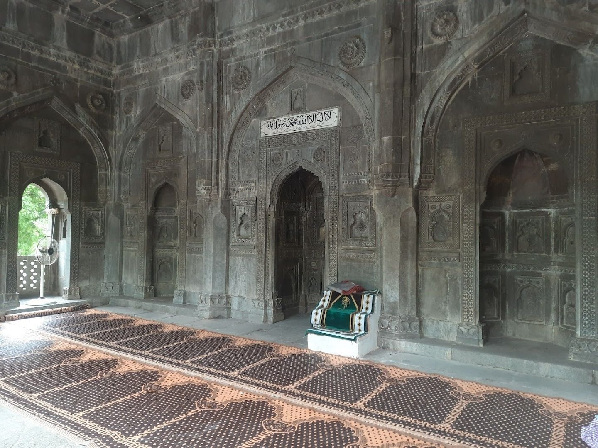

Damdi Mosque is located in the Ahmednagar cantonment. It is notable for its elaborate carvings and usage of unusually large stones. It is believed to have been built in 1567 A.D. by a noble named Sahir Khan from contributions of workmen employed on the Ahmednagar Fort who gave small daily donations of damdi (1/16 Re.) from their wages. This mosque is a very good example of Nizam Shahi period and is known for good design and fine workmanship, particularly of the carvings on its facade and the central mehrab. It consists of a single prayer hall of three aisles, each two bays deep, with corresponding arched openings in the north and south walls, and its flat roof is supported on arches springing from octagonal pillars placed on foliated bases. The facade has three arches of the pointed variety, shaded by a steep cornice on evenly placed brackets and flanked by a richly decorated square pylon at each end crowned by a slender and graceful minaret, which also occurs at the rear corners.
Timings: 24hours
